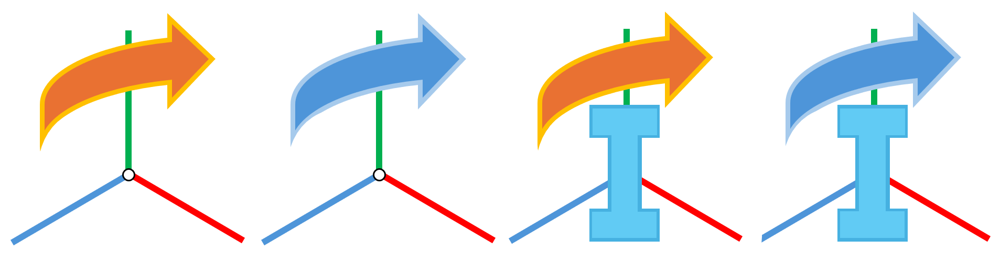

Glossary#
이 섹션은 NVIDIA Isaac Sim 전반에서 사용되는 용어에 대한 설명을 제공하며, Omniverse 용어집에 정의된 여러 용어를 포함합니다.
Omniverse#
Application#
Omniverse 앱은 원하는 기능을 제공하기 위해 특정 익스텐션 세트를 기반으로 구축됩니다. 앱은 커스텀 레이아웃으로 익스텐션의 UI를 구현하여 사용자에게 맞춤화된 경험을 제공합니다. 귀하, Omniverse 커뮤니티 또는 NVIDIA가 개발한 임의 수의 익스텐션으로 구성된 맞춤화된 앱을 빠르고 쉽게 만들 수 있습니다. 앱은 간단한 3D 뷰어부터 복잡한 AI 스위트까지 다양할 수 있습니다. 이 모듈식 앱 구축 방식은 맞춤화된 워크플로우나 글로벌 규모의 클라우드 애플리케이션을 쉽게 만들 수 있게 해줍니다.
Apps#
Omniverse 앱은 원하는 기능을 제공하기 위해 특정 익스텐션 세트를 기반으로 구축됩니다. 앱은 커스텀 레이아웃으로 익스텐션의 UI를 구현하여 사용자에게 맞춤화된 경험을 제공합니다. 귀하, Omniverse 커뮤니티 또는 NVIDIA가 개발한 임의 수의 익스텐션으로 구성된 맞춤화된 앱을 빠르고 쉽게 만들 수 있습니다. 앱은 간단한 3D 뷰어부터 복잡한 AI 스위트까지 다양할 수 있습니다. 이 모듈식 앱 구축 방식은 맞춤화된 워크플로우나 글로벌 규모의 클라우드 애플리케이션을 쉽게 만들 수 있게 해줍니다.
Connectors#
Omniverse 커넥터는 Omniverse와 다른 소프트웨어 애플리케이션이 서로 통신하는 미들웨어입니다. 서로 다른 도구와 워크플로우 간에 3D 에셋, 데이터, 모델의 가져오기/내보내기를 가능하게 합니다. 중요한 점은 3D 데이터를 변환하는 "중간" 형식으로 USD를 사용한다는 것입니다.
Omniverse Nucleus#
Omniverse Nucleus는 다양한 클라이언트 애플리케이션, 렌더러, 마이크로서비스가 가상 세계의 표현을 공유하고 수정할 수 있도록 하는 기본 서비스 세트를 제공합니다.
Nucleus는 발행/구독 모델로 운영됩니다. 접근 제어에 따라 Omniverse 클라이언트는 디지털 에셋 및 가상 세계에 대한 수정 사항을 Nucleus 데이터베이스(DB)에 발행하거나 변경 사항을 구독할 수 있습니다. 변경 사항은 연결된 애플리케이션 간에 실시간으로 전송됩니다. 디지털 에셋에는 가상 세계와 시간에 따른 변화를 설명하는 지오메트리, 조명, 재질, 텍스처 및 기타 데이터가 포함될 수 있습니다.
이를 통해 다양한 Omniverse 지원 클라이언트 애플리케이션(앱, 커넥터 등)이 가상 세계의 권위 있는 표현을 공유하고 수정할 수 있습니다.
Nucleus의 데이터 모델, 아키텍처, 배포 플랫폼에 대한 자세한 내용은 Nucleus overview를 참조하세요.
Hub Workstation Cache#
Hub Workstation Cache는 로컬 워크스테이션에서 USD 워크플로우의 속도를 향상시키는 서비스입니다. 로컬 워크스테이션에서 실행되는 독립형 서비스로 Kit 기반 애플리케이션이나 Client Library 도구에 유용합니다.
Hub Workstation Cache는 성능 최적화되었으며 최신 버전의 Kit 기반 애플리케이션에서 파생된 스토리지 데이터를 지원합니다.
자세한 내용은 Hub Workstation Cache overview를 참조하세요.
설치 방법은 Workstation Installation을 참조하세요.
Live Sync#
Live Sync 모드는 Nucleus 서버의 공유 파일을 실시간으로 "라이브" 편집할 수 있게 합니다. Live Sync 버튼은 워크스페이스 오른쪽 상단에 있습니다.
Omniverse Kit#
NVIDIA Omniverse™ Kit은 네이티브 Omniverse 애플리케이션과 마이크로서비스를 구축하기 위한 툴킷입니다. 영구적인 ABI 호환성을 위해 C 인터페이스로 작성된 경량 플러그인 세트를 통해 다양한 기능을 제공하는 Carbonite 기반 프레임워크를 기반으로 합니다. 스크립팅과 사용자 정의를 위해 Python 인터프리터가 제공됩니다.
NVIDIA Omniverse™ Kit은 Python 바인딩을 통해 많은 기능을 노출합니다. 이를 통해 Omniverse Kit에 새 익스텐션을 작성하거나 Omniverse를 위한 새 경험을 만드는 데 사용할 수 있는 API가 제공됩니다.
Kit에서의 개발에 대한 자세한 내용은 Kit Programming Manual을 참조하세요.
Omniverse Launcher#
NVIDIA Omniverse Launcher는 Omniverse에 입문하는 첫 번째 단계입니다. Omniverse 내의 모든 앱, 커넥터, 기타 다운로드에 즉시 접근할 수 있습니다.
자세한 내용은 Launcher overview를 참조하세요.
Omniverse USD Composer#
NVIDIA Omniverse™ USD Composer는 사용자가 대규모 씬을 조합, 조명, 시뮬레이션, 렌더링할 수 있도록 하는 Omniverse 월드 구축 앱이었습니다. NVIDIA Omniverse™ Kit을 사용하여 구축되었습니다. 씬 기술 및 인메모리 모델은 Pixar의 USD를 기반으로 합니다. USD Composer는 레이어, 배리언트, 인스턴싱 등 USD의 고급 워크플로우를 활용합니다.
Carbonite (carb)#
Carbonite SDK는 모든 Omniverse 앱의 핵심 기능을 제공합니다. Python 바인딩이 있는 C++ 기반 SDK로 플러그인 관리, 입력 처리, 파일 접근, 에셋 로딩 및 관리, 스레드 및 작업 관리 등 다양한 기능을 제공합니다.
RTX - Real-Time mode#
고품질 실시간 렌더링 모드.
RTX – Interactive (Path Tracing) mode#
가장 높은 품질의 물리적으로 정확한 렌더링 모드.
Extensions#
익스텐션은 Omniverse Kit의 기능을 확장하는 플러그인입니다. 개발자가 필요한 도구와 워크플로우를 쉽게 만들고 추가하고 수정할 수 있도록 완전한 소스 코드와 함께 제공됩니다. 익스텐션은 Omniverse Kit 기반 애플리케이션의 핵심 구성 요소입니다.
자세한 내용은 Extension Manager를 참조하세요.
Omniverse Connect#
커넥터는 DCC 도구와 컴퓨팅 서비스가 Omniverse Nucleus DB를 통해 서로 쉽게 통신할 수 있도록 하는 오픈소스 USD 배포 위의 익스텐션과 추가 소프트웨어 레이어입니다. 이러한 익스텐션과 추가 사항을 통칭하여 NVIDIA Omniverse™ Connect라고 합니다.
USD#
USD#
Universal Scene Description(USD)는 Pixar가 콘텐츠 제작과 도구 간 교환을 위해 개발한 쉽게 확장 가능한 오픈소스 3D 씬 기술 파일 형식입니다. 강력함과 다목적성 덕분에 시각 효과 커뮤니티뿐만 아니라 건축, 설계, 로봇공학, 제조 등 다양한 분야에서 널리 채택되고 있습니다.
Omniverse의 USD에 대한 자세한 내용은 NVIDIA의 USD 입문서 What is USD?를 참조하세요.
자세한 내용은 USD API 문서를 참조하세요.
자세한 내용은 USD 용어 및 개념 용어집을 참조하세요.
NVIDIA의 USD 튜토리얼을 참조하세요.
MDL#
Material Definition Language(MDL)는 재질 할당을 표현하고 재질 파라미터를 지정하는 NVIDIA가 개발한 USD 스키마입니다.
Stage#
Omniverse Stage 창에서는 현재 USD 씬의 모든 에셋을 볼 수 있습니다. USD Stage는 루트 USD 파일과 그것이 조합하는 모든 참조/레이어 파일에서 파생된 씬 그래프를 위한 USD 추상화입니다. 계층적(부모/자식) 순서로 나열된 Stage는 편리한 접근을 제공하며 일반적으로 대규모 씬을 탐색하는 데 사용됩니다.
자세한 내용은 Stage 문서를 참조하세요.
자세한 내용은 USD 용어 및 개념 용어집을 참조하세요.
Prim#
Prim은 USD의 기본 컨테이너 객체입니다: 프림은 다른 프림을 포함(및 순서 지정)하여 Stage에 "네임스페이스 계층 구조"를 만들 수 있으며, 프림은 또한 의미 있는 데이터를 보유하는 속성을 포함(및 순서 지정)할 수 있습니다. 프림은 관련된 계산된 인덱스와 함께 Stage가 메모리에 유지하는 유일한 영구 씬 그래프 객체이며, 프림과 상호 작용하는 API는 UsdPrim 클래스에서 제공됩니다.
자세한 내용은 USD 용어 및 개념 용어집을 참조하세요.
Mesh#
메시는 형상을 정의하는 점, 모서리, 면으로 구성된 세분할 가능한 프리미티브입니다. USD에서 메시는 UseGeomMesh 클래스로 인코딩됩니다.
Shape#
Shape는 USD의 5가지 "고유" UsdGeomGprim 클래스 중 하나에 매핑되는 기하학적 프리미티브입니다:
Shape는 메시가 아닙니다. 점, 모서리, 면의 집합으로 정의되지 않고 형상과 부피로 정의됩니다.
Pixar는 이러한 프림의 사용 사례를 UsdGeomGprim 스키마 문서에서 설명합니다.
Reference vs Payload vs Instance#

USD의 모든 것은 속성을 가진 프리미티브(프림)입니다. 이러한 프리미티브 중 일부는 현재 레이어(활성 스테이지)에 정의되어 있고, 다른 것들은 다른 레이어(다른 USD 파일)에 정의됩니다.
다른 레이어에서 포함된 프리미티브는 해당 프림에 대한 Reference(참조)이며, Isaac Sim의 컨텍스트 트리에서 관련 Xform 아이콘에 주황색 화살표로 표시됩니다. 참조는 경량으로 설계되었으며, 참조의 자식 프림이 수정되지 않을 것이라는 암묵적인 가정을 포함합니다.
시뮬레이션 중에 참조의 내용을 수정해야 한다면 Payload로 변환해야 합니다. 페이로드는 Isaac Sim의 컨텍스트 트리에서 관련 Xform에 파란색 화살표로 표시됩니다. 페이로드는 런타임에 수정할 수 있도록 모든 데이터가 시뮬레이터에 의해 적극적으로 로드되는 참조입니다.
Instance(인스턴스)는 파란색 "I"로 표시되며, 참조나 페이로드가 될 수 있습니다. 더 효율적인 벡터화(확장)를 위해 에셋 구조에 대한 추가적인 가정을 포함합니다.
예를 들어, 로봇으로 합성 데이터를 수집하고 싶다고 가정합시다. 로봇의 구조를 수정하지 않을 경우 스테이지에 참조로 존재할 수 있습니다(에셋이 다른 파일에 정의됨). 데이터 수집 중에 로봇을 다른 것으로 교체하려면 해당 메시가 활성 메모리에 있어야 합니다. 이는 에셋을 먼저 참조에서 페이로드로 변환해야 함을 의미합니다. 1000대의 동일한 로봇으로 데이터를 수집하려면 인스턴스화 가능한 참조를 사용할 수 있습니다. 반면, 1000개의 무작위로 샘플링된 로봇(같은 수의 관절을 가진 다른 팔 등)으로 데이터를 수집하려면 인스턴스 페이로드를 사용합니다.
Y-Up / Z-Up#
주어진 씬/프림의 방향 축. Y-Up은 양의 Y 축이 위를 향함을 의미합니다. Z-Up은 양의 Z 축이 위를 향함을 의미합니다. 이 방향 설정은 일반적으로 씬/프림 원점의 애플리케이션에 의해 설정됩니다.
Layer#
USD의 협업적 특성의 구성 요소. USD의 각 레이어는 스테이지 내 에셋에 대한 사용자의 "의견"을 나타냅니다. 레이어는 다른 레이어를 오버라이드할 수 있습니다.
Instance#
프림의 경량화된 덜 조작 가능한 복사본.
Checkpoint#
변경 불가능한 과거 파일 버전. 체크포인트는 버전 관리에 사용되며 스테이지를 이전 상태로 보고 복원할 수 있게 합니다.
PhysX#
NVIDIA PhysX는 확장 가능한 멀티 플랫폼 물리 시뮬레이션 솔루션입니다. NVIDIA Omniverse™ 물리 시뮬레이션 익스텐션은 NVIDIA PhysX SDK를 기반으로 하며, 강체 시뮬레이션, 관절 구조, 변형체 시뮬레이션, 캐릭터 컨트롤러를 포함합니다.
자세한 내용은 Physics Core를 참조하세요.
Isaac Sim#
ROS / ROS 2#
로봇 운영 체제(ROS)는 로봇 애플리케이션을 구축하는 데 도움이 되는 소프트웨어 라이브러리와 도구 세트입니다. NVIDIA Isaac Sim은 ROS 및 ROS 2 워크플로우에 연결하기 위한 많은 익스텐션, 예제, API를 제공합니다.
Dynamic Control#
Dynamic Control 익스텐션은 물리 객체를 제어하기 위한 유틸리티 세트입니다. 재생 또는 정지가 눌릴 때마다 발생하는 PhysX 씬 재설정 사이에서도 유효한 다양한 물리 객체에 대한 불투명 핸들을 제공합니다.
전체 사용 예제 및 API 세부 정보는 API Documentation 문서를 참조하세요.
Note
omni.isaac.dynamic_control은 더 이상 사용되지 않습니다.
Core API#
Important
Isaac Sim 5.0.0은 Core Experimental API를 도입했습니다: 더 강력하고 유연하며 강건하면서도 핵심 유틸리티와 래퍼 개념을 유지하도록 설계된 현재 Core API의 재작성된 구현.
앞으로 모든 Isaac Sim 소스 코드에서 사용되는 기본 API가 될 것입니다. 현재 Core API는 향후 릴리스에서 더 이상 사용되지 않고 제거될 예정입니다.
따라서 Core Experimental API의 조기 채택과 사용을 강력히 권장합니다.
Isaac Sim의 Isaac Core 익스텐션은 PhysX 및 원시 USD API에 대한 고수준 인터페이스를 제공합니다. 시뮬레이션된 세계의 생성 및 조작을 단순화하기 위해 기본 파라미터를 추상화합니다. 구체적으로 이 익스텐션은 다음을 허용합니다:
세계, 모든 시간 관련 이벤트, 관련 물리 및 수치 파라미터의 쉬운 생성, 조작, 관리
다양한 로봇 작업 및 제어기 생성
ArticulationView,RigidPrimView,XFormPrimView와 같은 다양한 view 클래스를 통한 강화 학습 환경의 벡터화된 조작으로, 관절 구조, 강체 프림, xform의 병렬 세트를 각각 조작하는 고수준 기능을 제공합니다.
전체 사용 예제 및 API 세부 정보는 API Documentation 문서를 참조하세요.
Riemannian Motion Policy (RMP)#
Riemannian Motion Policy(RMP)는 Omniverse Isaac Sim 내에서 대부분의 조작기 제어를 위한 기반이 되는 모션 생성 도구 세트입니다. 지능적인 충돌 회피로 로봇에 대한 부드러운 궤적을 생성합니다.
자세한 내용 및 예제는 Motion Generation 문서를 참조하세요.
World#
World는 쉽고 모듈화된 방식으로 시뮬레이터와 상호 작용할 수 있게 하는 핵심 클래스입니다. 콜백 추가, 물리 스텝, 씬 재설정, 작업 추가 등 많은 시간 관련 이벤트를 처리합니다. World 클래스는 싱글톤으로 Omniverse Isaac Sim 실행 중에는 하나의 World만 존재할 수 있습니다. 다른 익스텐션에서 시뮬레이션에 대한 정보를 얻으려면 World를 쿼리합니다.
Scene#
World는 Scene의 인스턴스를 포함합니다. USD 스테이지에서 관심 에셋을 관리하는 씬 관리 클래스로 생각하세요. 스테이지의 다양한 USD 에셋을 추가, 조작, 검사하고 기본 재설정 상태를 설정하는 쉬운 API를 제공합니다. Scene에 추가할 수 있는 많은 객체 클래스들은 보통 스테이지의 이미 존재하는 USD 프림을 사용하거나 새 USD 프림을 생성하여, 일반적인 속성을 설정/가져오는 쉬운 방법을 제공합니다.
Task#
isaacsim.core.api의 Task 클래스는 씬 생성, 정보 검색, 메트릭 계산, 더 복잡한 논리가 포함된 복잡한 씬 생성을 모듈화하는 방법을 제공합니다.
Articulation#
관절 로봇은 회전 관절을 가진 로봇입니다(예: 다리 로봇, 조작기 또는 바퀴 달린 로봇). NVIDIA Isaac Sim의 isaacsim.core.api 익스텐션에는 USD 스테이지에 존재하는 관절 구조와 쉽게 상호 작용할 수 있는 Articulation 클래스가 있습니다.
Replicator#
Replicator는 NVIDIA Isaac Sim에서 파라미터화 가능한 오프라인 데이터셋을 생성하기 위한 합성 데이터 생성 도구입니다.
추가 사용 정보는 omni.replicator 익스텐션 문서를 참조하세요.
Synthetic Data Generation#
NVIDIA Isaac Sim은 합성 데이터 생성 워크플로우를 지원합니다. 자세한 내용은 Replicator를 참조하세요.
Ground Truth#
NVIDIA Isaac Sim은 실제 데이터와 매우 유사한 그라운드 트루스 데이터를 생성하는 데 사용할 수 있습니다. 자세한 내용은 Replicator를 참조하세요.